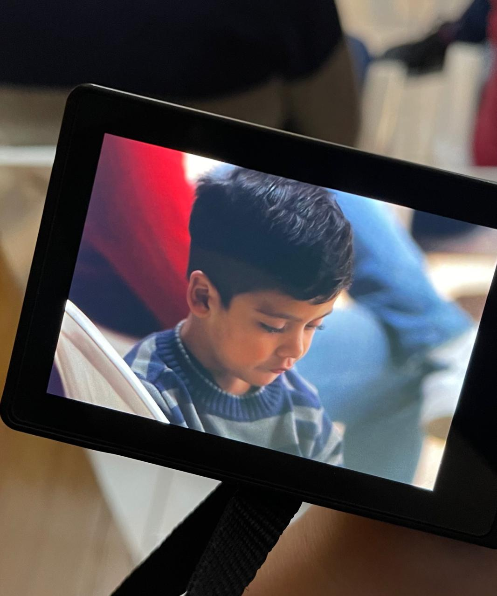
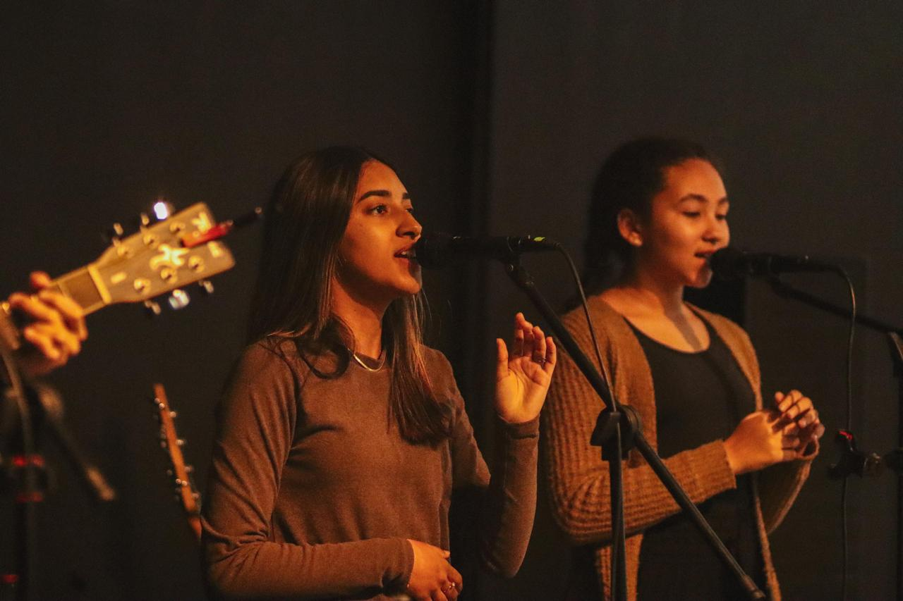
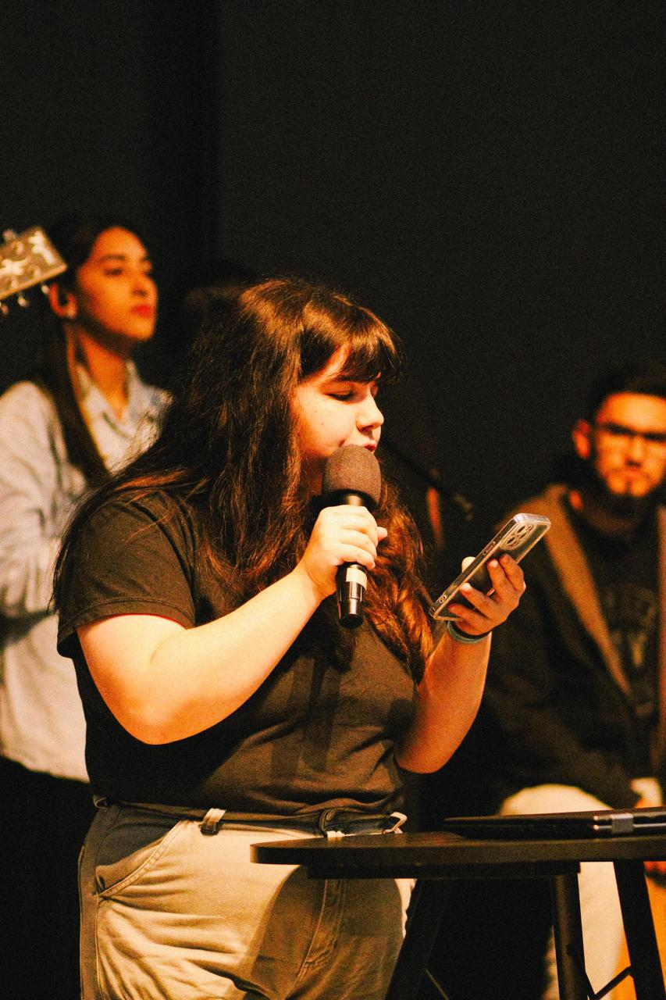
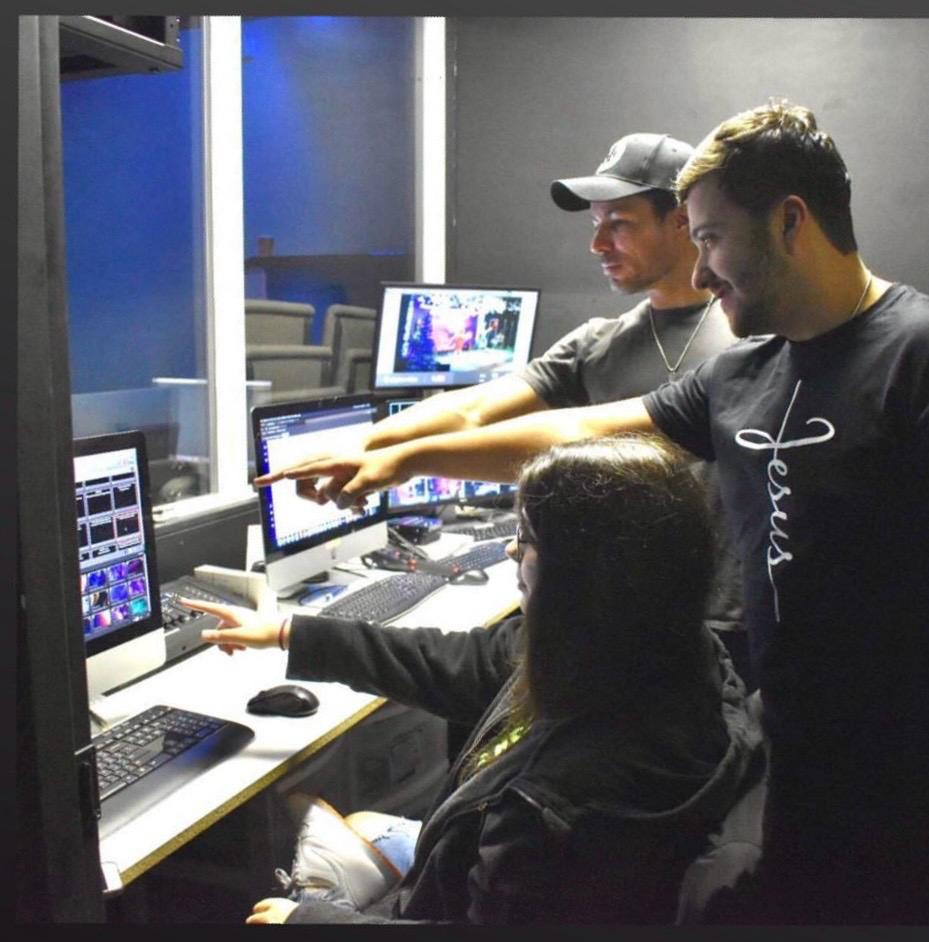

Multimedia
“I have been volunteering at church for as long as I can remember — from cutting the bread, to playing the piano, to staying with the kids, to finally being able to join the tech side with multimedia. I am no longer Protestant, having since becoming an adult joined the Catholic Church, where I help out, too. Regardless, God and church volunteering is a big part of who I am, and a big reason why I fell in love with technology.”
Video & Moving Image
Video production, live church recording, and edited sequences
Production Clip 01
Church service video capture and edited movement sequence.
Production Clip 02
Live musical worship capture and vertical sequence editing.
Production Clip 03
Dynamic stage coverage and live event video capture.
Photography
Curated photographic series, candid framing, and live service moments

Framing & Viewfinder
Curated portrait captured through the live monitor display during church rehearsal.

Live Acoustic Worship
Vocal harmony and acoustic performance in warm stage lighting during live service.

Speaker & Vocal Ministry
Live presentation and podium address during church gathering.
Volunteer & Church Multimedia
Visual media, technical setup, and communications coordination
Production & Visual Operations
Hands-on multimedia coordination, including camera operation, live audiovisual mixing, multi-screen projection displays, and volunteer welcoming engagement.
Welcome & Hospitality Team
Greeting the congregation and community with welcome signage and event communication.

Audiovisual Setup & Live Control
Coordinating multi-screen displays, live stream camera feeds, and real-time presentation control.